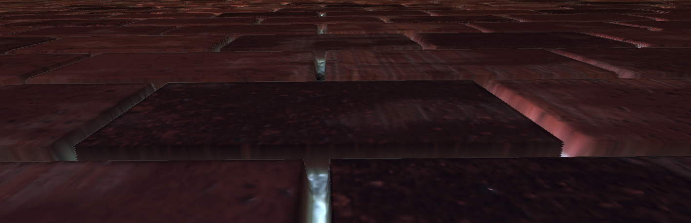

GoldenThumbs
I modified some Parallax Mapping samples I found online to work with Urho3D. Feel free to give me some suggestions and other stuff. 
Older Version (Height Map from Diffuse Alpha):
https://drive.google.com/file/d/1pejKXIGhBh5QYQqDdF6-CVWByygpztG2/view?usp=sharing
Slightly revised version (Height Map from Normal Map Alpha):
https://drive.google.com/file/d/1aQBfmt4lJ-zcN9Xr4i8GYdOVbev9oq8M/view?usp=sharing
Right now there is
-Normal Parallax Mapping
-Steep Parallax Mapping
-Parallax Occlusion Mapping
-Relief Parallax Mapping